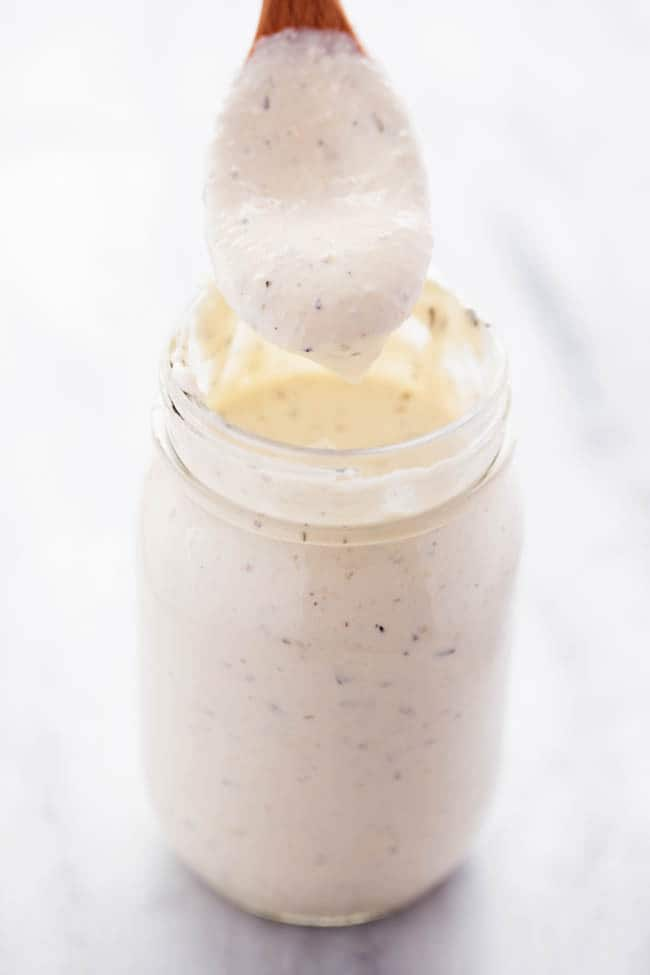

The Best Homemade Alfredo Sauce

Description
This alfredo sauce is the most delicious homemade alfredo sauce that you will ever make!
It comes together pretty easily and you will never go back to the jarred alfredo sauce again.
Use it on pasta, pizza, as a dipping sauce, or make a casserole with it.
Ingredients (makes 10 servings)
- 1/2 cup butter
- 1 pint heavy whipping cream (2 cups)
- 4 oz cream cheese
- 1/2 tsp. minced garlic
- 1 tsp. garlic powder
- 1 tsp. italian seasoning
- 1/4 tsp. salt
- 1/4 tsp. pepper
- 1 cup freshly-grated parmesan cheese (DO NOT use "shaker" parmesan)
Instructions
- In a medium saucepan add butter, heavy whipping cream, and cream cheese.
Cook over medium heat and whisk until melted.
- Add the minced garlic, garlic powder, italian seasoning, salt and pepper.
Continue to whisk until smooth. Add the grated parmesan cheese.
- Bring to a simmer and continue to cook for about 3-5 minutes or until it starts to thicken.
Toss it with your favorite pasta!
Notes
Original recipe: The Recipe Critic